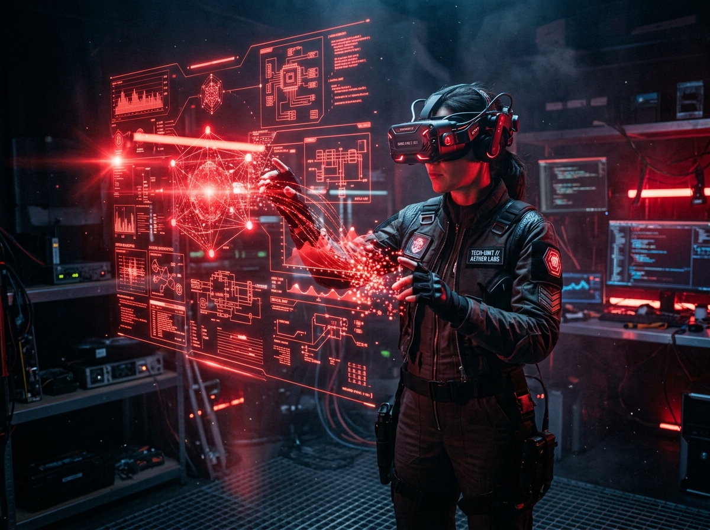
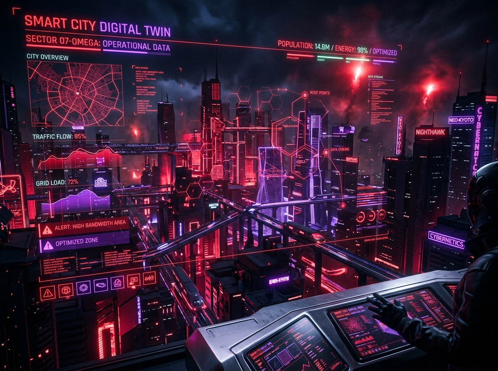
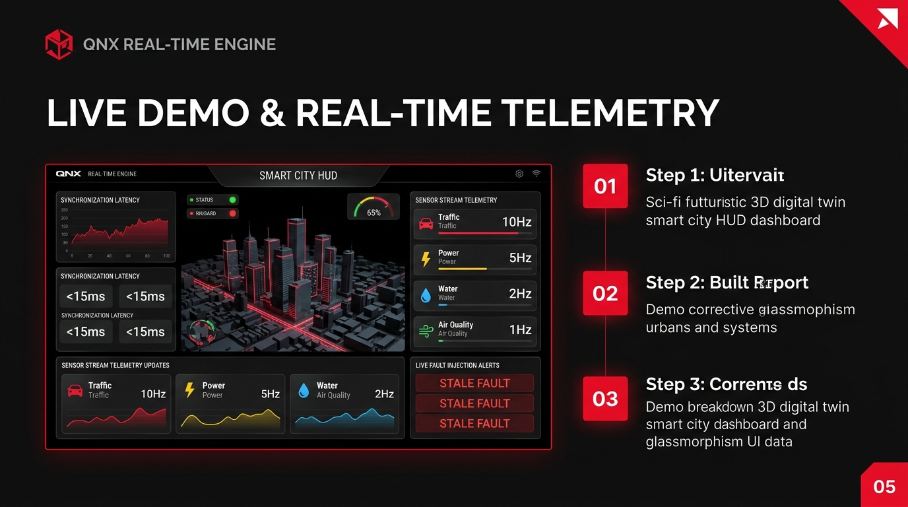

Current Time − Timestamp > Timeout → STALE DATA
Hardware equipment required to build the QNX City Digital Twin Synchronization Engine:
| Category | Hardware Component | Specification / Model | Purpose & System Role |
|---|---|---|---|
| Core SBC | Raspberry Pi 4 / 5 | 4GB / 8GB RAM + 32GB MicroSD | Primary Target Board running QNX Neutrino RTOS & Sync Engine. |
| Power Supply | Official USB-C Power Adapter | 5V 3A (Pi 4) / 5V 5A (Pi 5) | Reliable power source to prevent undervoltage during sensor processing. |
| Debug Cable | USB-to-TTL Serial Debug Cable | FTDI / PL2303 Chipset | Connects Pi GPIO Pins (TX/RX/GND) to PC for QNX boot logs & CLI terminal. |
| Network Link | RJ45 Ethernet Cable | Cat 6 Cable | High-speed link for QNX network deployment, SSH, & MQTT telemetry. |
| Env Sensor | BME280 / DHT22 Sensor | I2C / GPIO Interface | Measures temperature, humidity & air quality (1 Hz feed stream). |
| Traffic Sensor | HC-SR04 Ultrasonic Sensor | GPIO Pulse Echo Pin | Measures distance/vehicle count to simulate traffic congestion (10 Hz feed). |
| Energy Sensor | Potentiometer / ACS712 | Analog Dial / GPIO Input | Dial input for simulating power grid consumption loads (5 Hz feed). |
| Prototyping | Breadboard & Jumper Wires | M-to-F & M-to-M Wires | Wiring physical sensors to Raspberry Pi GPIO header pins. |

Environment (1Hz), Traffic (10Hz), Energy (5Hz), Water (2Hz). CLI displays state, update timestamp, data age, sync latency, & deadline violations.
Intentionally delay a sensor feed: Sensor Delay → Timeout → STALE FLAG → Fault Monitor → Twin retains last valid state.
Deterministic periodic sync, stale-data detection, bounded latency, correct multi-rate updates. Live QNX Digital Twin + Real-Time Metrics.